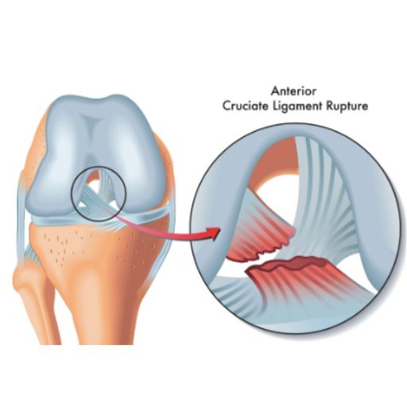
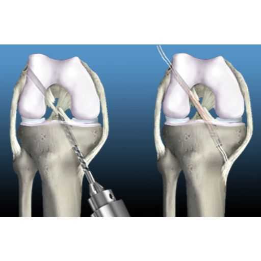

Home
Home
Knee Ligament Reconstruction
(for russian and italian, scroll down)
Restoring Strength and Stability to Your Knee
Understanding Knee Anatomy
The knee is one of the most complex and essential joints in the human body. It connects the thighbone (femur) and the shinbone (tibia), with the kneecap (patella) sitting at the front to provide additional protection. Stability and movement are controlled by four strong ligaments, which act like ropes to keep the joint in place:
🔹 Collateral Ligaments – Located on the inner and outer sides of the knee, they control side-to-side movements.
🔹 Cruciate Ligaments (ACL & PCL) – Found at the center of the knee joint, these ligaments cross to form an "X" shape. They control back-and-forth motion and rotational stability.

What Causes Knee Ligament Injuries?
Knee ligament injuries are common in sports that involve sudden stops, changes in direction, and pivoting, such as:
⚽ Football
🏀 Basketball
🏒 Hockey
🏉 Rugby
Ligament injuries are classified into three grades based on severity:
✔️ Grade I – Mild stretching of the ligament with no significant instability.
✔️ Grade II – Partial tear of the ligament, causing moderate instability.
✔️ Grade III – Complete ligament rupture, leading to joint instability and loss of function.

What is Arthroscopic Knee Ligament Reconstruction?
Ligament reconstruction is a minimally invasive procedure designed to restore knee stability by replacing the damaged ligament with a tissue graft. The graft can be taken from:
🦵 Your own body (autograft) – Typically from the hamstring, patellar tendon, or quadriceps tendon.
🔬 A donor (allograft) – Used in certain cases for faster recovery and reduced surgical trauma.
The new ligament is secured to the femur and tibia using specialized screws, clips, or staples. Over time, the bone integrates with the graft, making it a natural part of the knee.
How is Arthroscopic Knee Ligament Reconstruction Performed?
This advanced surgical technique uses a tiny camera (arthroscope) and specialized instruments, inserted through small incisions around the knee. The procedure follows these steps:
1️⃣ Anesthesia – General or regional anesthesia is administered for patient comfort.
2️⃣ Joint Visualization – A sterile solution is introduced to expand the knee joint, allowing for a clear view.
3️⃣ Arthroscope Insertion – The surgeon examines the knee joint on a high-definition monitor.
4️⃣ Damaged Ligament Removal – Any remaining torn ligament is carefully removed.
5️⃣ Graft Placement – A new ligament is positioned and fixed securely to the femur and tibia.
6️⃣ Closure – The incisions are closed with sutures or adhesive strips, and a sterile bandage is applied.
Benefits of Arthroscopic Knee Ligament Reconstruction
Unlike traditional open surgery, arthroscopic ligament reconstruction offers multiple advantages:
✔️ Minimally invasive – Smaller incisions mean less trauma to surrounding tissues.
✔️ Reduced postoperative pain – Faster pain relief and quicker return to daily activities.
✔️ Shorter hospital stay – Most patients can go home the same day.
✔️ Faster recovery – Less downtime and quicker return to sports.
Recovery & Rehabilitation
While knee ligament reconstruction restores stability, rehabilitation is key to regaining full function.
📅 First Weeks: Focus on pain management, swelling control, and gentle mobility exercises.
🏋️ Months 2-3: Progressive strengthening of the knee and surrounding muscles.
🏃 Months 4-6: Sport-specific training to restore agility, balance, and endurance.
🥇 Return to Play: Most athletes can safely resume high-impact sports after 6 to 12 months, depending on progress.
Regain Confidence in Your Knee
A torn ligament doesn’t have to mean the end of an active lifestyle. With expert surgical care and a personalized rehabilitation program, you can return to the activities you love—stronger than ever.
Schedule your consultation today and take the first step toward recovery!
Реконструкция связок коленного сустава
Восстановите стабильность и силу колена
Анатомия коленного сустава
Коленный сустав – один из самых сложных и важных суставов в организме человека. Он соединяет бедренную кость (фемур) и большеберцовую кость (тибия), а надколенник (пателла) защищает сустав и облегчает движение.
Стабильность и подвижность коленного сустава обеспечивают четыре главные связки, которые действуют как прочные «канаты», удерживая кости в правильном положении:
🔹 Боковые (коллатеральные) связки – расположены с внутренней и внешней стороны колена, контролируют боковые движения.
🔹 Крестовидные связки (передняя и задняя – ACL и PCL) – расположены в центре сустава и образуют «X»-образную структуру. Они контролируют передне-задние движения и ротационную стабильность.
Как происходят повреждения связок колена?
Травмы связок чаще всего встречаются у спортсменов, занимающихся видами спорта с резкими остановками, сменой направления и прыжками:
⚽ Футбол
🏀 Баскетбол
🏒 Хоккей
🏉 Регби
Повреждения связок классифицируются по степени тяжести:
✔️ Степень I – Незначительное растяжение связки без серьезной нестабильности.
✔️ Степень II – Частичный разрыв связки, приводящий к умеренной нестабильности.
✔️ Степень III – Полный разрыв связки, вызывающий серьезную нестабильность коленного сустава.
Что такое реконструкция связок коленного сустава?
Это минимально инвазивная хирургическая процедура, позволяющая восстановить стабильность сустава путем замены поврежденной связки на трансплантат. В качестве трансплантата могут использоваться:
🦵 Собственные ткани пациента (аутотрансплантат) – обычно берутся сухожилия подколенных мышц, надколенника или квадрицепса.
🔬 Ткани донора (аллотрансплантат) – применяется в некоторых случаях, чтобы минимизировать хирургическое вмешательство и ускорить восстановление.
Новый трансплантат фиксируется в бедренной и большеберцовой кости с помощью винтов, клипс или скоб, после чего постепенно интегрируется в структуру колена и становится его естественной частью.
Как проходит операция?
Реконструкция связок выполняется с использованием артроскопа (миниатюрной камеры) и специальных хирургических инструментов, вводимых через небольшие разрезы вокруг колена.
1️⃣ Анестезия – Общий или спинальный наркоз в зависимости от состояния пациента.
2️⃣ Осмотр коленного сустава – В сустав вводится стерильный физиологический раствор для улучшения видимости.
3️⃣ Введение артроскопа – Хирург оценивает состояние сустава на мониторе высокой четкости.
4️⃣ Удаление поврежденной связки – Остатки разорванной связки удаляются.
5️⃣ Фиксация трансплантата – Новый трансплантат закрепляется с помощью биосовместимых материалов.
6️⃣ Завершение операции – Разрезы зашиваются и покрываются стерильной повязкой.
Преимущества артроскопической реконструкции связок
В отличие от традиционной открытой хирургии, артроскопический метод имеет ряд преимуществ:
✔️ Минимально инвазивное вмешательство – Небольшие разрезы уменьшают повреждение окружающих тканей.
✔️ Меньше боли после операции – Восстановление проходит быстрее и комфортнее.
✔️ Короткий период госпитализации – Большинство пациентов выписываются в тот же день.
✔️ Быстрое восстановление – Спортсмены могут вернуться к тренировкам в более короткие сроки.
Реабилитация и восстановление
Хотя операция восстанавливает стабильность колена, успех лечения зависит от грамотной реабилитации.
📅 Первые недели: Контроль боли, снижение отека, постепенное увеличение подвижности.
🏋️ 2–3 месяц: Укрепление коленного сустава и мышц.
🏃 4–6 месяц: Специальные упражнения для восстановления координации, баланса и силы.
🥇 Возвращение в спорт: Большинство спортсменов могут возобновить активные тренировки через 6–12 месяцев, в зависимости от скорости восстановления.
Верните уверенность в своих движениях
Разрыв связок коленного сустава – это не приговор. Современные методы лечения и индивидуальная программа реабилитации помогут вам вернуться к активному образу жизни и наслаждаться движением без боли.
Запишитесь на консультацию уже сегодня и начните путь к восстановлению!
Ricostruzione dei Legamenti del Ginocchio
Ripristina la Stabilità e la Forza del Tuo Ginocchio
Anatomia del Ginocchio
L’articolazione del ginocchio è una delle più complesse e importanti del corpo umano. Collega il femore (osso della coscia) alla tibia (osso della gamba), mentre la rotula (patella) protegge la parte anteriore e facilita il movimento. La stabilità e il movimento del ginocchio dipendono da quattro legamenti principali, che agiscono come "corde" per mantenere l’articolazione allineata:
🔹 Legamenti collaterali – Situati sui lati interno ed esterno del ginocchio, controllano i movimenti laterali.
🔹 Legamenti crociati (ACL e PCL) – Si trovano al centro dell’articolazione del ginocchio e si incrociano formando una “X”. Sono fondamentali per il controllo del movimento avanti e indietro e per la stabilità rotazionale.
Come si Verificano le Lesioni ai Legamenti del Ginocchio?
Le lesioni ai legamenti sono comuni negli sport che richiedono movimenti rapidi, cambi di direzione e torsioni, come:
⚽ Calcio
🏀 Basket
🏒 Hockey
🏉 Rugby
Le lesioni ai legamenti vengono classificate in tre gradi in base alla loro gravità:
✔️ Grado I – Leggera distorsione del legamento senza instabilità significativa.
✔️ Grado II – Rottura parziale del legamento, con conseguente instabilità moderata.
✔️ Grado III – Rottura completa del legamento, che causa instabilità articolare severa.
Che Cos’è la Ricostruzione dei Legamenti del Ginocchio?
Si tratta di una procedura minimamente invasiva che ripristina la stabilità del ginocchio sostituendo il legamento danneggiato con un innesto di tessuto. Questo innesto può provenire da:
🦵 Il tuo stesso corpo (autoinnesto) – Generalmente prelevato dal tendine rotuleo, dal tendine del quadricipite o dai muscoli posteriori della coscia.
🔬 Un donatore (alloinnesto) – Scelta utilizzata in alcuni casi per ridurre il trauma chirurgico e accelerare il recupero.
Il nuovo legamento viene fissato al femore e alla tibia con viti, clip o graffette speciali. Nel tempo, l’osso si integra con l’innesto, trasformandolo in una parte naturale del ginocchio.
Come si Svolge l’Intervento?
Questa tecnica avanzata viene eseguita con una microcamera (artroscopio) e strumenti chirurgici specializzati, inseriti attraverso piccole incisioni nel ginocchio.
1️⃣ Anestesia – Solitamente generale o regionale, a seconda delle necessità del paziente.
2️⃣ Visualizzazione dell’articolazione – Viene iniettata una soluzione sterile per espandere l’articolazione e migliorare la visibilità.
3️⃣ Inserimento dell’artroscopio – Il chirurgo esamina l’articolazione su un monitor ad alta definizione.
4️⃣ Rimozione del legamento danneggiato – I frammenti del legamento rotto vengono rimossi.
5️⃣ Posizionamento dell’innesto – Il nuovo legamento viene fissato con dispositivi biocompatibili.
6️⃣ Chiusura – Le incisioni vengono suturate e coperte con una medicazione sterile.
Vantaggi della Ricostruzione Artroscopica del Legamento
Rispetto alla chirurgia tradizionale a cielo aperto, questa tecnica offre numerosi benefici:
✔️ Minimamente invasiva – Piccole incisioni che riducono il trauma ai tessuti circostanti.
✔️ Meno dolore postoperatorio – Recupero più confortevole e rapido.
✔️ Ridotta degenza ospedaliera – La maggior parte dei pazienti viene dimessa lo stesso giorno.
✔️ Recupero più veloce per gli atleti – Tempi di recupero più brevi e ritorno allo sport più rapido.
Recupero e Riabilitazione
Anche se l’intervento ripristina la stabilità del ginocchio, la riabilitazione è essenziale per una ripresa completa.
📅 Prime settimane: Controllo del dolore, riduzione del gonfiore e recupero graduale della mobilità.
🏋️ Mesi 2-3: Rafforzamento muscolare del ginocchio e delle strutture circostanti.
🏃 Mesi 4-6: Allenamento specifico per migliorare agilità, equilibrio e resistenza.
🥇 Ritorno allo sport: Gli atleti possono tornare alle attività ad alto impatto dopo 6-12 mesi, a seconda dei progressi.
Torna a Muoverti con Fiducia
Una lesione ai legamenti del ginocchio non deve segnare la fine della tua vita attiva. Con un intervento specializzato e un programma di riabilitazione personalizzato, puoi tornare a praticare le tue attività preferite con un ginocchio forte e stabile.
Prenota una visita oggi e fai il primo passo verso il recupero.